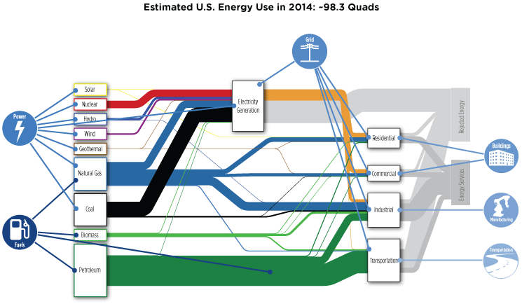

Introduction
The United States is in the midst of an energy revolution. Over the last decade, the United States has slashed net petroleum imports, dramatically increased shale gas production, scaled up wind and solar power, and cut the growth in electricity consumption to nearly zero through widespread efficiency measures. Emerging advanced energy technologies provide a rich set of options to address our energy challenges, but their large-scale deployment requires continued improvements in cost and performance. Technology is helping to drive this revolution, enabled by years to decades of research and development (R&D) that underpin these advances in the energy system.
The energy revolution underway creates additional opportunities for technologies and systems with superior performance and reduced costs. The convergence of many energy sectors—such as the electric grid, electricity production, buildings, manufacturing, fuels, and transportation—into systems linked through information and communications technologies (ICT), advanced modeling and simulation, and controls, has the potential to revolutionize energy services throughout the economy. These advances can enable the United States to address pressing national energy challenges—security, economic vitality, and climate change.
The 2015 Quadrennial Technology Review (QTR) examines the status of the science and technology that are the foundation of our energy system, together with the research, development, demonstration, and deployment (RDD&D) opportunities to advance them. It focuses primarily on technologies with commercialization potential in the midterm and beyond. It frames various trade-offs that all energy technologies must balance across such dimensions as cost, security and reliability of supply, diversity, environmental impacts, land use, and materials use. Additionally, it provides data and analysis on RDD&D pathways to assist decision makers as they set priorities, within budget constraints, to develop more secure, affordable, and sustainable energy services. Policies and regulations are examined separately by the Quadrennial Energy Review (QER).
National Energy System Strategic Objectives
Three enduring strategic objectives are foundational to our nation’s energy system: energy security, economic competitiveness, and environmental responsibility.
Secure and resilient: There are four interrelated dimensions to energy security: physical, cyber, supply, and conflict-related. Physical security risks are related to damage to energy supply, storage, and delivery infrastructures, such as the electric grid, pipeline networks, and rail and marine systems. Cybersecurity vulnerabilities are related to the compromise of ICT-based controls that operate and coordinate energy supply, delivery, and end-use systems. Supply security risks are related to price shocks and international supply disruptions of energy commodities, critical materials, and/or equipment. Conflict–related security risks are associated with unrest in foreign countries linked to, or impacting, energy. Climate change increases physical security risks with sea level rise and intensification of extreme weather.
Economically competitive: Energy underpins every facet of the nation’s economy and modern way of life. Low energy costs are beneficial to consumers and therefore the broader economy. Decades of research have gone into reducing the capital, operating, and fuel costs of conventional and advanced energy technologies. The benefits of this research are evident in the recent price declines of natural gas, domestic oil, wind turbines, photovoltaics, and efficient lighting. Progress in a broader array of advanced technologies could increase the diversity and stability of energy supplies, and spark competition to drive further price declines.
Environmentally responsible: Development of a clean energy system will rely on increasingly advanced technologies to minimize its environmental footprint. Over the last several decades, the United States has made significant progress in reducing pollution—atmospheric, water, land—from energy-related activities. For example, energy-related atmospheric emissions of conventional pollutants such as particulates, sulfur, and nitrogen compounds have been reduced through improved combustion strategies and “end-of-pipe”—e.g., scrubbers, catalytic converters—emissions controls. Additional emissions reductions have been achieved by improving efficiency and transitioning to cleaner fuels and low-carbon resources. These successes demonstrate what can be accomplished with RDD&D and policy. Advanced technologies can have a significant impact on the next generation of challenges, especially deep reductions in greenhouse gas (GHG) emissions to moderate the otherwise increasing damage from climate change and ocean acidification. The United States can demonstrate the viability of sustainable energy systems to the global community and provide leadership in creating vibrant economies, enhancing human progress, and assuring a sustainable biosphere.
Developing energy systems that balance trade-offs to simultaneously advance toward these objectives requires RDD&D across a diversified portfolio of technologies. It also requires understanding the multiple dimensions of each of these objectives.
Energy System Perspective
To help identify where RDD&D can have the greatest impact, it is first necessary to understand how energy is used in the United States. A complex and vast array of systems and associated technologies extract energy resources; convert them into usable forms of energy; and deliver them to end users to provide desired services such as manufactured goods, thermal comfort, lighting, and mobility. The current state of energy supplies and end uses is described in Chapter 1.
Increasing the interconnectedness and resulting interdependency among energy sectors creates both opportunities and challenges that should be approached from an energy system perspective. Strategies for advancing technology across the entire energy system, in contrast to individual energy technologies, are necessarily broad.
First, certain technologies affect the energy system by impacting more than one energy sector. Application of an energy system view of technology can help to identify the crosscutting impacts of technologies developed for a particular application as applied to other sectors, as well as the elements of the value chain that must be in place for success. Realizing the full benefit of developing these crosscutting technologies requires the involvement of stakeholders from across the energy economy.
Second, the systems perspective can illuminate opportunities to improve performance and/or mitigate risk through sector integration. Success requires advancing the operation, planning, modeling, and simulation of technical systems integrated across sectors.
Finally, application of an energy system view can be used to develop solutions to complex energy challenges. New paradigms based on the science of large and complex systems can help enable the prediction and control of emergent properties and behaviors, including disruptions that arise from sector and technical system interconnectedness. The focus of Chapter 2 is Energy Sectors and Systems.
Overarching Themes, Energy Sectors, and Crosscutting RDD&D Opportunities
By studying the whole energy system and the interdependency of the energy sectors, four overarching themes, six sets of core RDD&D opportunities (organized by energy sector), and twelve crosscutting technology areas are identified and presented.
Overarching Themes
Four overarching themes emerged from the QTR and associated technology assessments: 1) the convergence of energy systems across sectors; 2) diversification within energy supplies and services; 3) confluence of R&D, computational tools, and analysis of complex systems; and 4) energy efficiency.
Convergence: Virtually all sectors of the energy system are becoming increasingly interdependent. Further, the power, grid, buildings, manufacturing, fuels, and transportation sectors of the energy system are necessarily coupled to water systems, material flows, waste products, and energy financial markets. Properly tuned and integrated energy sectors and technology systems have the potential to improve their overall operations, increase their efficiency, and enable fundamentally new concepts in the structure of the energy economy.
Diversification: Most energy sectors in the United States are experiencing a trend toward increased diversification. For example, electricity, hydrogen, natural gas, and biofuels are entering the transportation sector, while the power sector is shifting to greater use of natural gas and renewables. This diversification creates challenges for energy infrastructures, but it can also provide flexibility.
Confluence: The confluence of advances in computing power and software, theory, modeling, synthesis and characterization is rapidly ushering in a new era of “systems by design” for materials, chemicals, and biological science. This transformation from observation to control and design of complex systems has the potential to accelerate development of these systems with desired properties. This set of concepts—generalized to new classes of sensors, big data management, and computational modeling—is applicable across the spectrum of complex systems topics encountered in the energy system.
Efficiency everywhere: Achieving greater efficiency is a proven means to help achieve national energy security, cost, and environmental goals. As raw energy resources are transformed into services and products, losses compound along the energy value chain. Efficiency improvements in any step along the value chain can materially impact costs, consumption, and emissions. RDD&D opportunities to advance cost-effective efficiency technologies permeate all of the energy sectors and systems.
Energy Sectors
The QTR describes the national energy system as comprising six individual sectors: 1) the electric grid, 2) electricity production (power), 3) buildings (residential and commercial), 4) manufacturing (the majority of the larger industrial sector), 5) fuels (with an emphasis on fuels for transportation), and 6) transportation. Each of these sectors comprises numerous technical systems, sub-systems, and component technologies. The QTR dedicates a chapter to each of these six sectors, exploring its related technologies, challenges, and RDD&D opportunities.

Figure ES.1 Sankey Diagram of the U.S. Energy System Depicting Major Areas of Coverage by the Technical QTR Chapters 3–8
Electrical grid sector: The U.S. electric power sector is the centerpiece of the nation’s energy economy. However, the design and operation of today’s grid is being challenged to meet the evolving security, cost, and environmental needs of a low-carbon, digital economy. Shifts are occurring on the supply side (e.g., increased adoption of renewable resources) and demand side (e.g., growing use of demand side management). Accompanying these changes is the growing adoption of digital communications and control systems (i.e., smart grid technologies) to improve performance and engage consumers. Additionally, grid operation is moving from controlling systems with a handful of control points at central stations to ones with potentially millions of highly interactive distributed control points. In short, the power grid is confronted with new requirements as it attempts to perform in ways for which it was not designed. Meanwhile, the nation’s reliance on a dependable, efficient, and resilient power grid is rising. The focus of Chapter 3 is Enabling Modernization of the Electric Power System.
Electricity production sector: The current portfolio of electricity production includes a combination of reliable but aging base-load generation, evolving renewable resources, new natural gas plants, and new and pending nuclear and clean coal facilities. As the industry evolves to meet growing electrification and GHG reduction goals, challenges arise in optimizing the system, minimizing risks, and maintaining reasonable cost. Future developments will likely include a mix of three broad categories: 1) fossil-based generation with carbon capture and storage (CCS), 2) nuclear energy, and 3) renewables, such as solar and wind. Technologies that enable higher efficiencies and effective pollution control are an essential complement to this evolving generation mix. Similarly, crosscutting concepts—such as supercritical carbon dioxide Brayton cycles—could, if broadly applied, impact efficiency, emissions, and water consumption across fossil, nuclear, geothermal, and solar thermal plants. While supporting aggressive emission reductions, the traditional market drivers such as reliability, safety, and low cost must be maintained and enhanced. The focus of Chapter 4 is Advancing Clean Electric Power Technologies.
Buildings sector: Considerable potential exists to reduce building energy use. The residential and commercial buildings sector accounts for about 74% of electricity use and 40% of all U.S. primary energy use. Many building technologies are available today that would significantly reduce energy use relative to the existing building stock. Yet, the best available and most cost effective ones are only beginning to be widely adopted in the marketplace. It has become increasingly apparent that technology developments in the buildings sector have the potential to simultaneously accelerate cost reductions, service improvements, and efficiency gains. Advanced heating/cooling and lighting are current R&D priorities, as they represent the greatest end-use energy-saving opportunities. Much progress is being made in areas such as light-emitting diode (LED) lighting, appliances, and non-vapor compression heating, ventilation, and air conditioning (HVAC). Miscellaneous electric loads and an eclectic mix of technologies (e.g., grills, spa and pool pumps, laundry, and elevators) are expected to be an increasing share of the remaining load as other end uses become significantly more efficient. The focus of Chapter 5 is Increasing Efficiency of Building Systems and Technologies.
Manufacturing sector: Manufacturing consumes twenty-four quads of primary energy annually in the United States—about 79% of total industrial energy use. However, this sector’s energy impacts are much broader, as manufactured goods affect the production, delivery, and use of energy across the economy. Improved manufacturing technologies can drive economy-wide energy impacts, including energy efficiency in the manufacturing sector; new types of manufactured products; and sustainability of U.S. industry supply chains and their life-cycle impacts. The focus of Chapter 6 is Innovating Clean Energy Technologies in Advanced Manufacturing.
Fuels Sector: Fuels supply 99.8% of the energy currently used in the transportation sector and 70% of the energy used to generate electricity in the United States. The economy will need to balance the various strengths and shortcomings of a broad mix of fuels during the transition from a high-carbon to a low-carbon economy. This fuel mix includes the following:
- Fossil fuels: Chemical fuels, primarily derived from fossil energy resources, supply about 83% of total U.S. primary energy use.
- Bioenergy for fuels: With technology improvement and a mature market, available bioenergy could provide more than fifty billion gallons of fuels per year, equivalent to about 25% of current transportation fuel demand.
- Hydrogen production and distribution: Technologies for producing hydrogen from large natural gas reforming plants are mature, but the costs of converting the end-to-end fuels infrastructure, including delivery, to accommodate hydrogen are high. While the near-term deployment challenge is to reduce the cost of infrastructure for fueling vehicles, in the longer term the major challenge is to reduce the cost of hydrogen production from regionally optimized renewable and low-carbon resources.
With recent growth in domestic shale gas and tight oil production, near-term concerns over fuel supply and energy security are easing. However, the economic and environmental impacts of heavy reliance on fossil fuels make their further cleanup or transition to clean alternatives imperative. The trade-offs between conventional (oil and gas) and alternative fuels (primarily biofuels and hydrogen) or substitution with electricity—i.e., cost, performance, infrastructure, security, and environmental impacts—are complex. Optimizing the benefit of fuel diversification is challenged by the varying time frames for development and deployment of fuels, production and distribution infrastructures, and end-use devices such as vehicles. The focus of Chapter 7 is Advancing Systems and Technologies to Produce Cleaner Fuels.
Transportation Sector: Transportation provides essential passenger, freight, and other mobility services to individuals and the economy. It is the primary user of petroleum in the United States and a major emitter of air pollutants and GHGs. Currently, light- and heavy-duty vehicles account for approximately three-quarters of transportation energy use and emissions. Other modes in the transportation system include rail, marine, aircraft, and pipelines, the proportional emissions from which are likely to grow in importance as the efficiency of on-road transportation technologies improves. To greatly reduce GHG emissions, a larger share of vehicles must efficiently use fuels or power with drastically reduced life-cycle carbon emissions. The technology portfolio benefits from a set of complementary RDD&D pathways, including advanced combustion, light-weighting, battery storage, electric drivetrain, fuel cell systems, and recharging and refueling infrastructure. Addressing the transportation sector as a holistic system that encompasses more than just vehicle technologies is another important emerging research opportunity. The focus of Chapter 8 is Advancing Clean Transportation and Vehicle Systems and Technologies.
Cross-Cutting RDD&D Opportunities
Inevitably, many technology themes were identified that cut across the six sectors. As a result, they should be integrated in ways that bridge strict sectoral boundaries. In a simplified view, the crosscutting topics can be grouped into two major categories: “technical topics” and “enabling tools.”
The “technical topics” include the following:
- Grid modernization: Advanced grid technologies are needed to improve the agility and flexibility of the system to better integrate the changing characteristics of devices and technology systems on both the supply and demand sides.
- Systems integration: Appropriate application of systems integration requires understanding, control, and optimization across multiple sectors, time frames, and spatial scales. An integrated systems approach can address complexity and enable more efficient deployment of advanced energy technologies.
- Cybersecurity:Opportunities to improve cybersecurity are being actively pursued for the energy sector (i.e., electric, oil, and gas), and also exist in industrial automation systems and information technologyenabled innovations across the fuels, power generation, buildings, manufacturing, and intelligent vehicle spaces.
- Energy-water:Science and technology advancements at the intersection of energy and water can reduce energy use and increase water availability for human consumption, other non-energy uses, and natural systems.
- Subsurface: Understanding and controlling fractures, fluid flow, and complex chemistry in subsurface rock formations on timescales of microseconds to millennia are important for oil and gas production, geothermal energy, CCS, and nuclear waste disposal.
- Materials: Across all energy sectors, advancements in materials could dramatically accelerate and reduce the cost of developing new energy technologies. Examples include development of materials for extreme working conditions, advanced processing of them, and their rapid qualification.
- Fuel-Engine co-optimization: With bio-derived and/or other synthetic fuels there is an opportunity to optimize the end-to-end fuel-vehicle system for improved efficiency and reduced environmental impacts.
- Energy storage: Fundamental research on efficient, durable storage could enable transformational change across multiple sectors, including transportation, and the electricity system.
The “enabling tools” include the following:
- Computational modeling and simulation: Advances in high performance computation have enabled simulation of increasingly complex physical phenomena. High-fidelity simulations, in turn, inform models that improve and accelerate the RDD&D phases of the energy innovation cycle.
- Data and analysis:Opportunities to apply advanced analytics transect the entire clean energy economy. The emerging science of extracting actionable information from large data sets is both an opportunity to accelerate RDD&D and a research need.
- Analysis of complex systems: Increasing complexity resulting from the convergence of the sectors of the energy system introduces a need for foundational, conceptual research on integrated, networked, and complex systems.
- Characterization and control of matter at multiscales: Extraordinary advances in characterization and modeling of materials and chemistry have paved the way for manipulating and synthesizing materials at the atomic-, nano-, and mesoscale to create new tailored functionalities. The research spans a range of dimensions from the atom, to biological cells, to macroscopic structures, with applications across many scientific and engineering disciplines.
The crosscutting RDD&D opportunities listed here offer the potential to dramatically improve the performance and posture of all energy resources and end uses. They represent a condensed set of concepts—linked by an overarching goal to understand, predict, and control complex energy systems—that appear in more than one of the technology areas of this report (see Table 2.1).
Enabling Capabilities for Science and Energy
Investment in basic science research is expanding our understanding of how structure leads to function—from the atomic- and nano-scale to the meso-scale and beyond—and is enabling a transformation from observation to control and design of new systems, with properties tailored to meet the requirements of the next generation of energy technologies. The challenges in energy science and technology development increasingly necessitate interdisciplinary collaboration. The multidisciplinary and multi-institutional research centers supported by DOE and others have the potential to accelerate development of new and transformative energy technologies by more effectively integrating basic science and applied research. At the core of this new paradigm is a diverse suite of complex experimental and computational tools that enable researchers to probe and manipulate matter at unprecedented resolution. The planning for and development of these tools are rooted in basic science, but they are critically important for technology development, enabling discoveries that can lead to broad implementation. These tools are available through a user facility access model that provides open access, regardless of institutional affiliation, for nonproprietary research based on merit review of submitted proposals. This is a synergistic model: thousands of scientists and engineers leverage the capabilities and staff expertise for their research, while the facilities leverage user expertise toward maintenance, development, and application of the tools in support of the broader community of users. The focus of Chapter 9 is Enabling Capabilities for Science and Energy.
Concepts in Integrated Analysis
A goal of technology development programs, whether in the private sector or in government institutions, is to maximize the positive impact of RDD&D portfolio investments in energy technologies. The many technologies described in this QTR illustrate the potential impacts that further RDD&D could have to create a secure, competitive, and clean energy system. Weighting of these impacts, as well as the metrics from which they are built (e.g., cost, performance, land use, water quality, GHG emissions, etc.), will necessarily vary with the perspective of the observer. Research institutions must consider multiple impact metrics that address their overarching goals from a business or public perspective. To this end, portfolio analysis is widely employed, but at varying levels of thoroughness, analytic rigor, and transparency. Many tools for technology planning and projection, analysis, metrics calculation, and impact evaluation exist already, but are not necessarily fully developed or packaged in a way that can be readily used for evaluating energy portfolios. This QTR explores processes to shape an energy portfolio and estimate the potential impacts, articulates the current state of integrated technology assessment, gives examples of sector-specific applications of metrics and tools for technology analysis in use in various organizational contexts (i.e., corporate, nonprofit, academic, and government), and identifies gaps that require further development of technical assessment capabilities. The focus of Chapter 10 is Concepts in Integrated Analysis.
Conclusion
The world of energy-related research is rich with opportunities to help create a secure, resilient, economically efficient, and environmentally responsible set of energy systems. Those systems will rely on more efficient energy conversion technologies and will benefit from improved understanding of complex, interdependent systems that provide electricity, transportation, water, and materials for manufacturing. Underlying the advances in those areas will be the many technologies and capabilities described in this report, as well as fundamental scientific research and advanced scientific computing for complex systems. The technology development community is beginning to take advantage of the rapidly emerging set of tools for creating new generations of materials, devices, and systems for energy applications; however, much more can be done. A goal is to put these new tools in their hands to drive a well-diversified portfolio of energy research that will enable leadership by the United States to provide the energy services essential to modern societies.